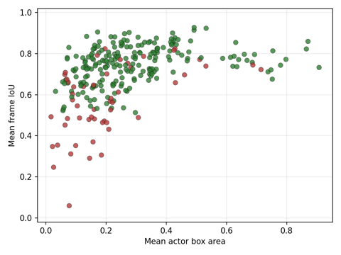

Action Recognition Using Vision Transformers
We fine-tuned TimeSformer, VideoMAE and ViViT on HMDBsimp, then built a DETR-style tubelet detector on the VideoMAE backbone for JHMDB. On the test sets, VideoMAE reached 91.49% top-1 and 100% top-5, and the detector reached 73.8% frame-mAP and 76.1% video-mAP at IoU 0.5.
My part: the VideoMAE training pipeline, the JHMDB tubelet localisation pipeline, and the localisation error analysis. The plot is from that analysis: actor size and frame IoU have a moderate correlation (r ≈ 0.42), so small actors are harder to localise.